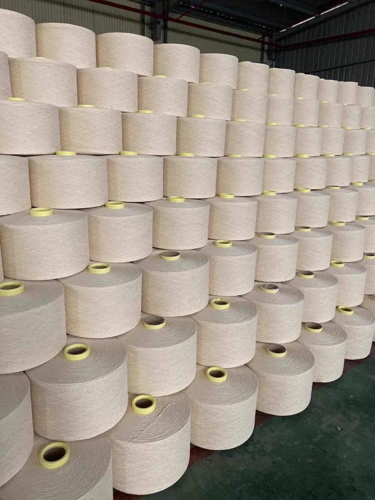
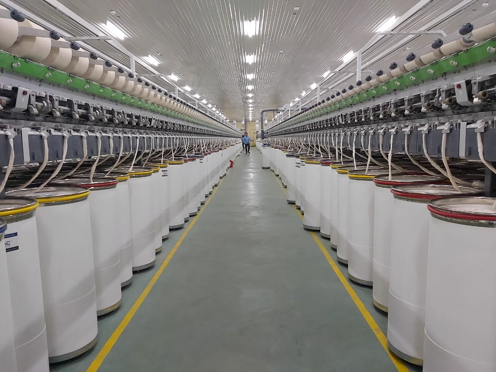
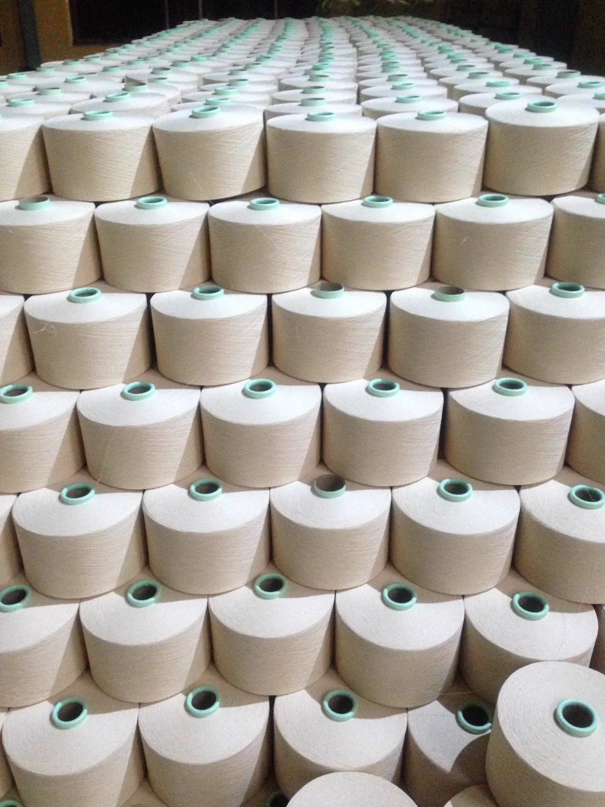
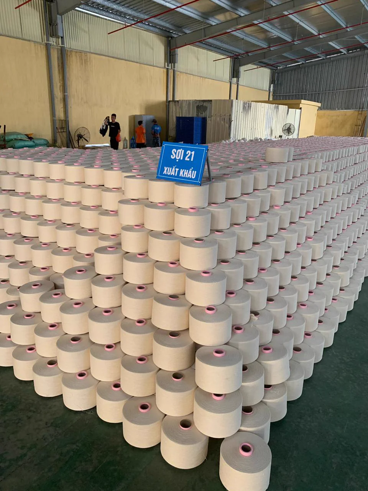
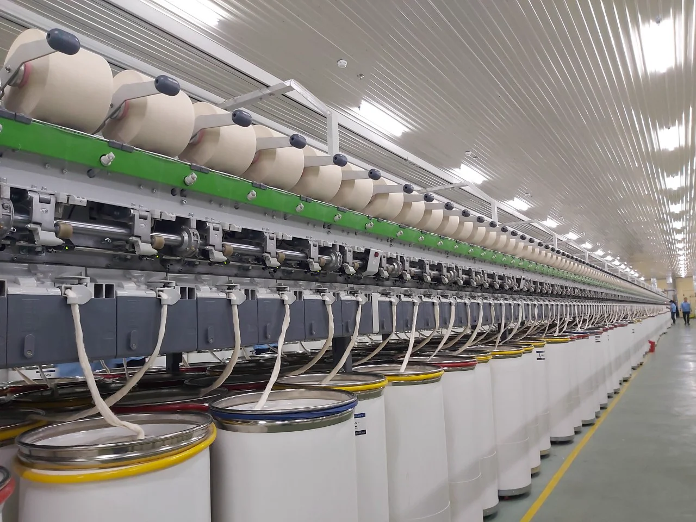

Sợi 10
Tham khảo cho các cấu trúc vải cần sợi thô và bề mặt có độ dày.
Sợi dệt công nghiệp
Khám phá các dòng sợi theo chỉ số, từ sợi thô đến sợi mảnh, để chọn nguyên liệu phù hợp cho sản phẩm dệt của bạn.
Khám phá sản phẩm
Tham khảo các chỉ số sợi theo nhu cầu dệt kim, dệt thoi và phát triển mẫu.

Tham khảo cho các cấu trúc vải cần sợi thô và bề mặt có độ dày.

Tham khảo khi cần cân đối giữa độ dày của sợi và mật độ vải.

Tham khảo cho các cấu trúc vải cần sợi mảnh hơn trong danh mục.

Chuẩn bị xơ, chải, ghép và kéo sợi là các công đoạn định hình đặc tính của sợi. Khi chọn nguyên liệu, chỉ số sợi, thành phần xơ và mục đích sử dụng là những thông tin cần đối chiếu.
Chia sẻ chỉ số sợi, thành phần xơ, ứng dụng và sản lượng dự kiến để bắt đầu trao đổi.
Thông tin liên hệ đang được cập nhật.